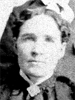
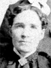

The Family of John Johnson and Rachel Maria Davies
Home
Histories
Charts
Photos
Maps
Restricted
News
Info
Contact
 symbol is a link to a history, and the chart
symbol is a link to a history, and the chart  symbol is a link to a family group chart.)
symbol is a link to a family group chart.)| John Johnson Davies 28 Dec. 1831 - 23 Dec. 1906 Married 3 Oct. 1853 to Rachel Maria Davies (15 Apr. 1833 - 17 May 1869) Also married Elizabeth Davies 25 July 1870 |   |
|
Martha Maria Davies 2 July 1854 - 13 Apr. 1926 Married Rees Jones Williams 24 Nov. 1872 The 1st child of John Johnson Davies and Rachel Maria Davies |
| * | Child Davies 1856 (stillborn) The 2nd child of John Johnson Davies and Rachel Maria Davies |
| * | Sarah Jane Davies 1 Sep. 1857 - 4 Feb. 1863 The 3rd child of John Johnson Davies and Rachel Maria Davies |
| John Henry Davis or Davies 17 Apr. 1860 - 17 May 1947 Married Mary Anna Henderson 2 Nov. 1884 Married Laura Jane Henderson 3 Nov. 1887 The 4th child of John Johnson Davies and Rachel Maria Davies |
   | Henry William Davis 20 June 1862 - 2 July 1936 Married Annie Isadore Roundy 10 Feb. 1886
The 5th child of John Johnson Davies and Rachel Maria Davies |
|
Phillip David Davies 21 Dec. 1864 - 8 May 1935 The 6th child of John Johnson Davies and Rachel Maria Davies |
| Rachel Elizabeth Davies 8 Jan. 1867 - 16 June 1937 Married Hyrum Beal Allen 20 Feb. 1879 The 7th child of John Johnson Davies and Rachel Maria Davies |
| Margrette Alena Davies 17 May 1869 - 18 Mar. 1897 Married Robert Madison Mulliner 17 Nov. 1892 The 8th child of John Johnson Davies and Rachel Maria Davies |